Stage de Deuxième Année
Solaris BI
Du 6 Janvier au 7 Février 2025
Mon espace de travail
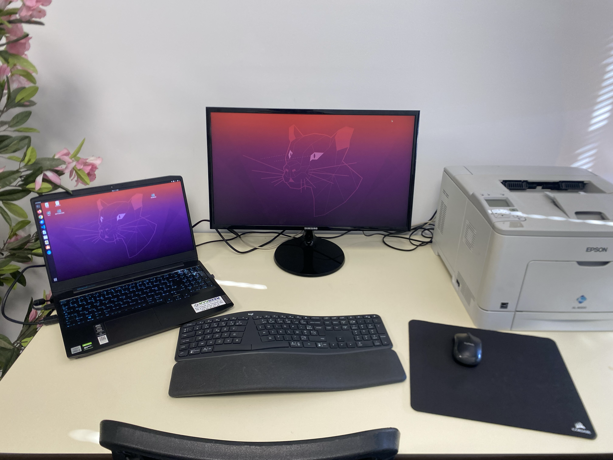
Notre bureau chez Solaris BI pendant mon stage
Contexte du stage
Solaris BI est une entreprise spécialisée dans le développement de logiciels
dédiés à la gestion de transport et à la maintenance de flottes de véhicules et
d’engins. Elle propose des solutions complètes et personnalisables pour optimiser
la disponibilité des véhicules et prolonger leur durée de vie. L’entreprise est située
au 4 rue de l’Estancogne, 48100 Marvejols. Elle détient également des locaux à la
pépinière d’entreprises POLeN à Mende.
L’entreprise met en œuvre des technologies de pointe pour développer des
solutions logicielles innovantes. Par conséquent, elle a développé APOLLO, un
logiciel performant conçu pour gérer efficacement la maintenance des flottes.
Objectifs
Durant ce stage, il fallait, selon des spécifications
prédéterminées, développer, tester et finalement intégrer une nouvelle
fonctionnalité sur le logiciel mobile APOLLO de l'entreprise, en utilisant les
technologies Angular (Framework de JavaScript) et Ionic (Framework pour la
création d’applications mobiles).
Ce projet devait me permettre d'acquérir des compétences techniques en
développement mobile, ainsi que de comprendre le fonctionnement d'une équipe
de développement en méthodologie Agile.
Tâches réalisées
Description
Avant d’entamer le développement, j’ai pris le temps de me familiariser avec les technologies utilisées par Solaris BI. L’entreprise travaille avec Angular pour le développement web et Ionic pour la partie mobile, deux frameworks puissants mais nécessitant une prise en main approfondie.
J’ai suivi des tutoriels et exploré leur documentation pour mieux comprendre leur architecture et leur fonctionnement. Tout se faisait sur Ubuntu, une distribution de Linux
Parallèlement,
j’ai intégré les outils de gestion de projet tels que Bitrix24, utilisé pour organiser le travail en équipe et gérer les tâches, ainsi que GitLab , qui assure le versionnement du code et la collaboration entre développeurs.
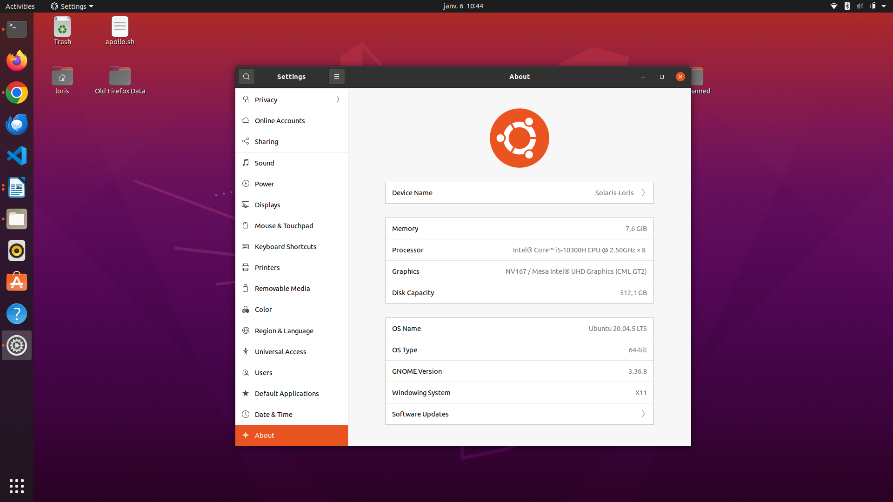
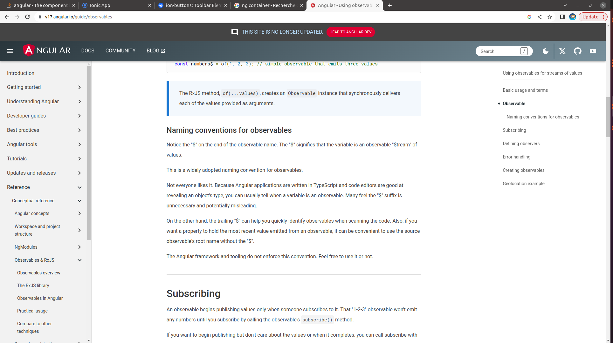
Compétences acquises
Description
La première mission concrète consistait à analyser les spécifications pour la nouvelle fonctionnalité “Planning des interventions des mécaniciens”, destinée à l’application mobile APOLLO. Cette fonctionnalité devait permettre aux mécaniciens de visualiser leurs interventions planifiées, avec un affichage optimisé et des options de filtrage.
J’ai étudié la documentation technique fournie par l’équipe, identifié les contraintes et échangé avec mes collègues pour clarifier certains points techniques. Un système de code couleur était utilisé dans la documentation pour distinguer les fonctionnalités à développer immédiatement de celles à prévoir pour des mises à jour ultérieures.
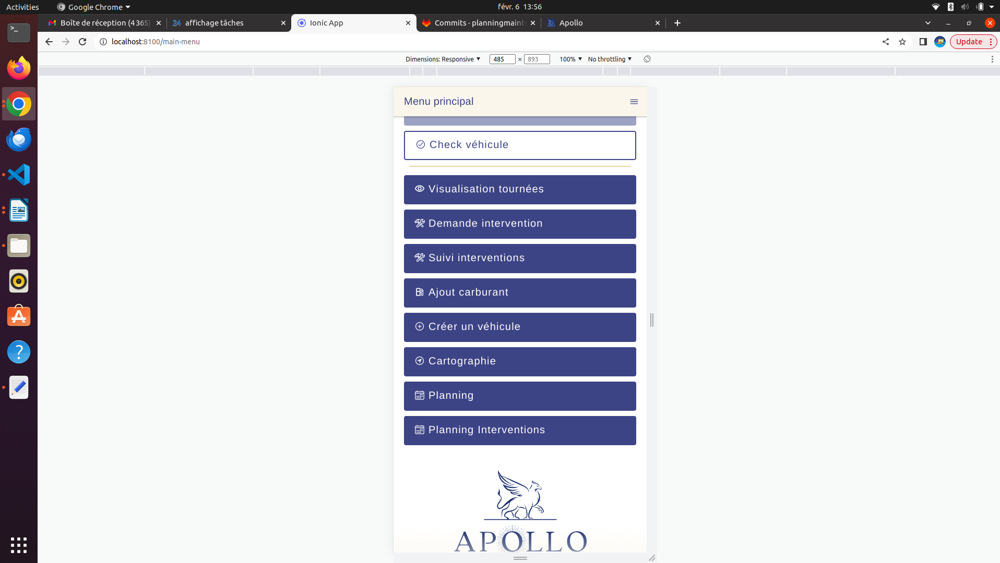
Compétences acquises
Description
Une fois les spécifications bien assimilées, j’ai débuté l’implémentation du système d’affichage du planning. L’objectif était d’afficher les interventions des mécaniciens sous forme de cartes interactives, triées en fonction de plusieurs critères comme le véhicule concerné, le mécanicien assigné, ou le prestataire. Pour rendre cette interface plus intuitive, j’ai intégré un filtrage avancé permettant aux utilisateurs de rechercher des interventions spécifiques selon leur statut ou leur urgence. L’implémentation a nécessité l’utilisation des composants Angular et Ionic, notamment le modalController, qui a facilité la gestion des pop-ups d’informations sans alourdir l’interface principale.
Une difficulté rencontrée concernait la connexion entre le frontend et l’API backend. Certaines informations n’étaient pas récupérées correctement, ce qui m’a amené à collaborer avec un collègue backend pour ajouter les bons paramètres dans les requêtes API. Une fois ce point résolu, l’affichage du planning des interventions était fonctionnel et prêt à être testé.
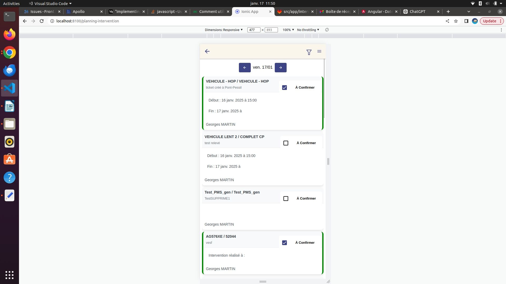
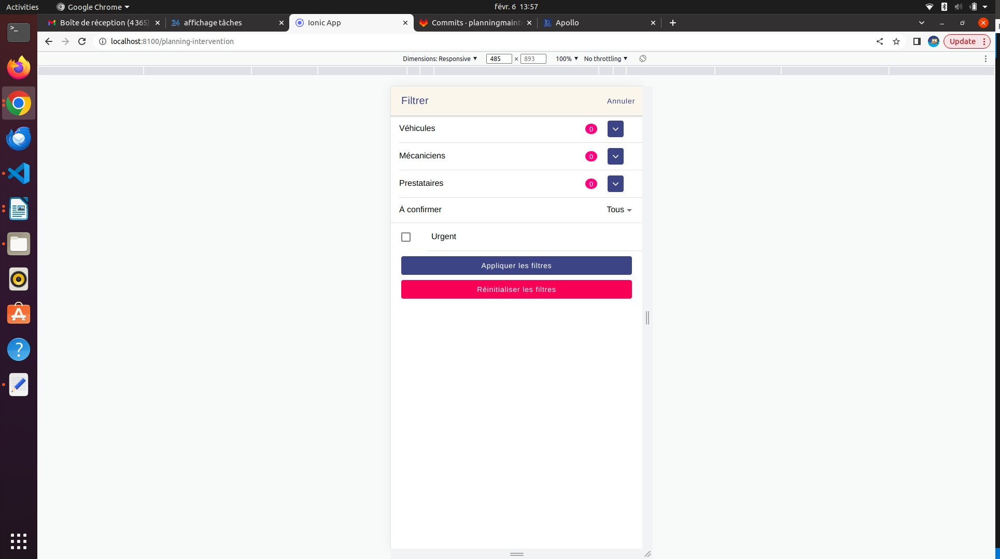
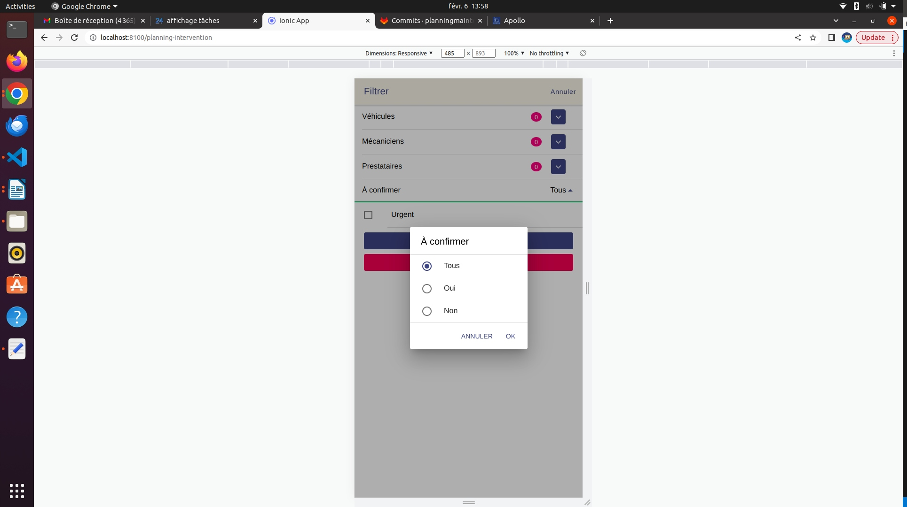
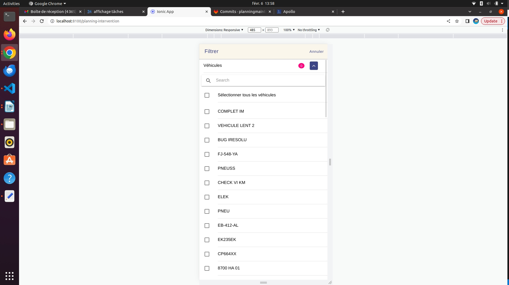
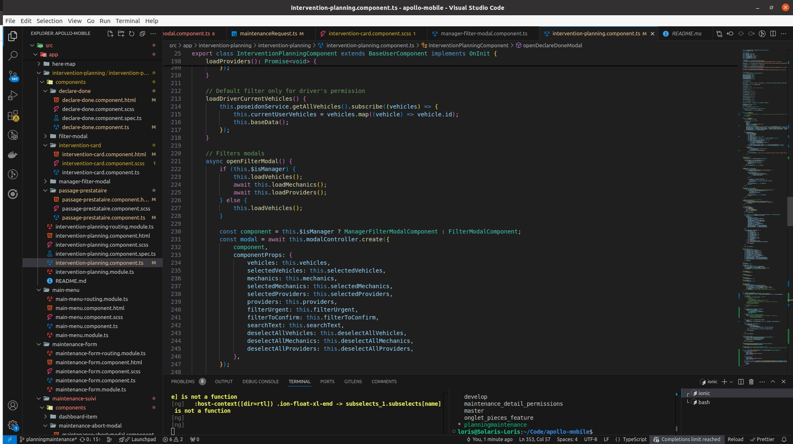
Compétences acquises
Description
Après avoir finalisé l’affichage des interventions, l’un des défis majeurs a été d’améliorer l’expérience utilisateur (UX). L’application devait offrir une navigation fluide et intuitive. J’ai donc optimisé l’apparence des cartes d’intervention en y ajoutant des icônes de statut pour indiquer si une intervention était planifiée ou terminée. De plus, un sélecteur de date interactif a été intégré pour permettre aux mécaniciens de visualiser leur planning sur plusieurs jours sans avoir à recharger l’application.
Une autre amélioration a concerné la gestion des permissions utilisateurs. En plus des mécaniciens, les chauffeurs et managers devaient avoir accès à certaines informations spécifiques. J’ai donc ajusté les droits d’accès et modifié les filtres en fonction du rôle de chaque utilisateur.
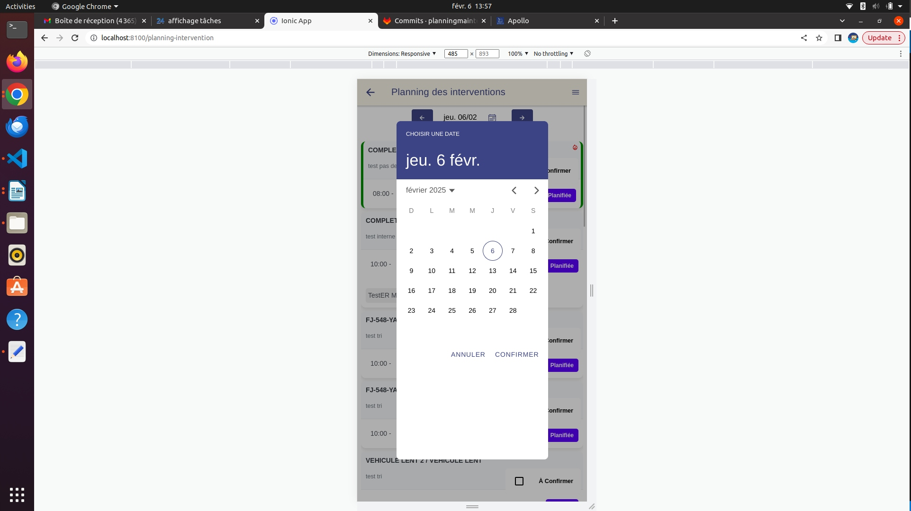
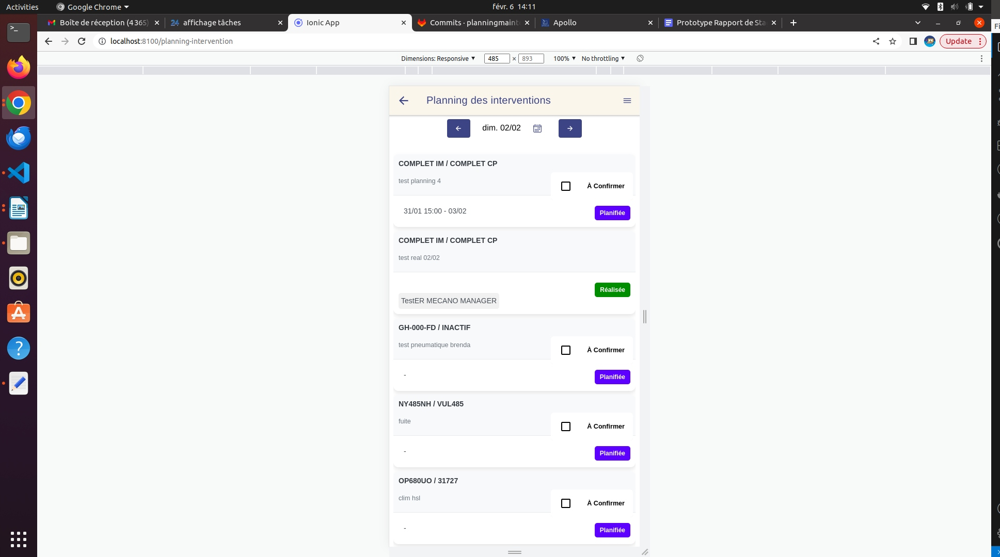
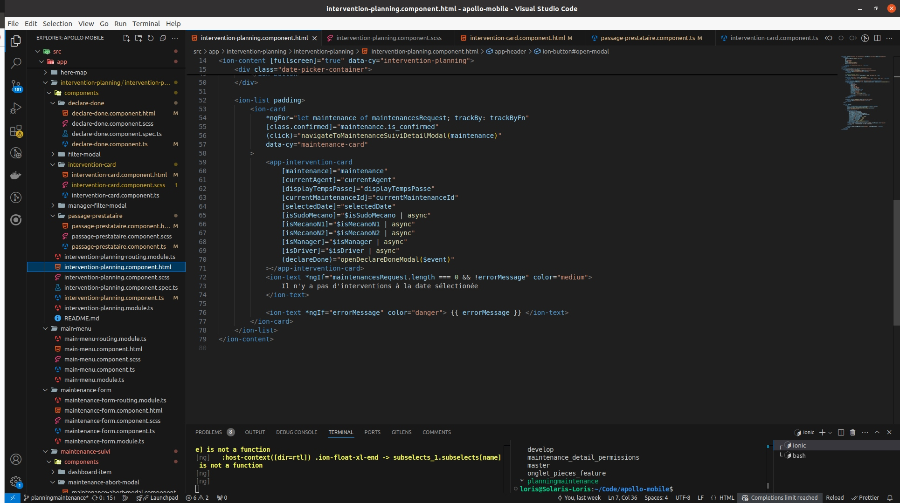
Compétences acquises
Description
Pour garantir la stabilité de la fonctionnalité, j’ai effectué plusieurs tests manuels et automatisés. J’ai d’abord testé l’application sur différents appareils mobiles afin d’identifier les éventuels problèmes d’affichage ou de performance. Ensuite, j’ai utilisé Cypress pour écrire et exécuter des tests end-to-end (E2E), qui simulent les actions des utilisateurs sur l’application. Ces tests ont permis de détecter et corriger plusieurs bugs, notamment des erreurs dans le filtrage des interventions et des incohérences dans l’affichage des données.
Une fois les tests validés, la fonctionnalité a été soumise en préproduction. À Solaris BI, les nouvelles versions de l’application sont déployées chaque lundi, après validation par l’équipe qualité. J’ai collaboré avec les testeurs pour apporter des corrections mineures avant le déploiement final.
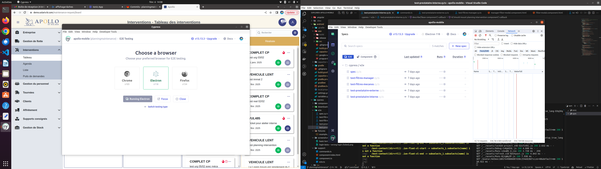
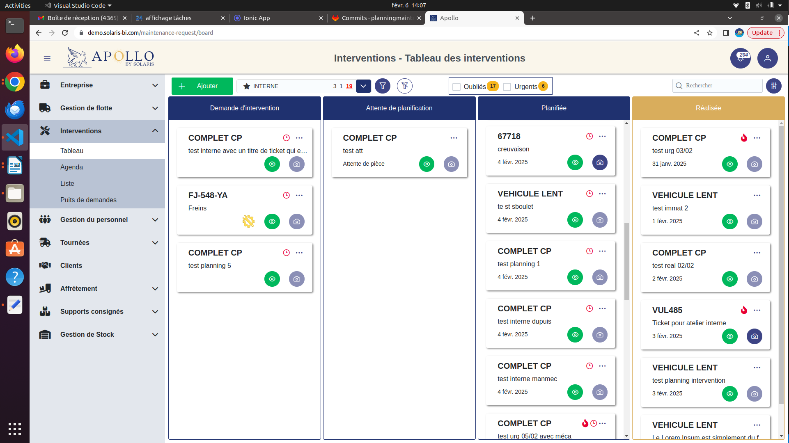
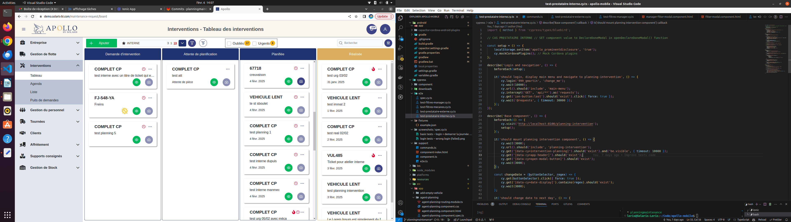
Compétences acquises
Description
Une fois le développement terminé, j’ai pris le temps de refactoriser le code, c’est-à-dire d’optimiser sa structure pour qu’il soit plus lisible et maintenable. J’ai supprimé les redondances, ajouté des messages d’erreur explicites, et amélioré l’organisation des composants Angular. Enfin, j’ai rédigé une documentation technique détaillant le fonctionnement de la nouvelle fonctionnalité, afin de faciliter son évolution future par d’autres développeurs de l’équipe.
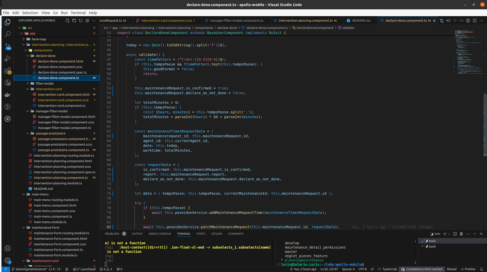
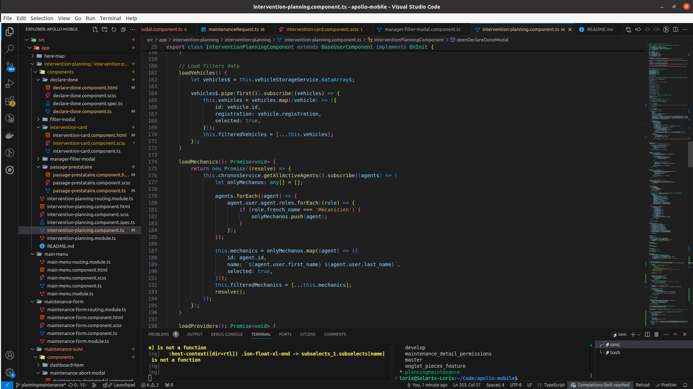
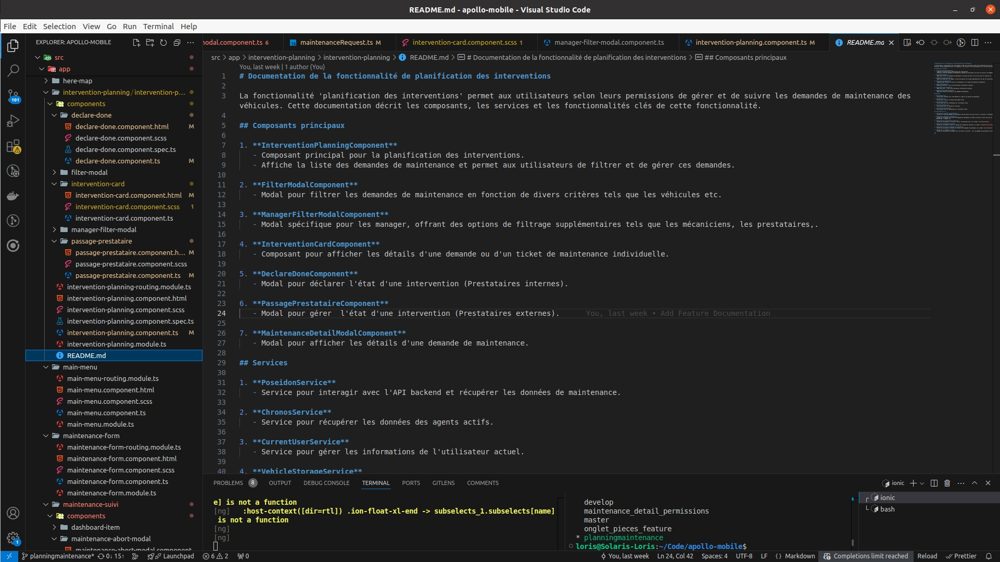
Compétences acquises
Description
En plus du développement, j’ai eu l’opportunité d’assister à une réunion avec les investisseurs de Solaris BI. Cette expérience m’a permis de découvrir les enjeux économiques d’un projet logiciel et d’apprendre comment les choix techniques influencent la rentabilité et l’évolution d’un produit.